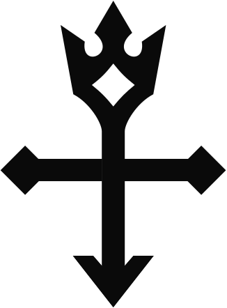

[orleq] личный канал доступа

Маршрут,
который не видно
Личная линия туда, где обычно не пускают. Настройка занимает пару минут, доступ открывается сразу после оплаты — без анкет, звонков и переписки с менеджером.
- 2 минна настройку
- 24/7бот на связи
- 0анкет и звонков
01 / принципы
Четыре правила,
по которым это работает
-
01
Своя линия
Обычный Wi-Fi живёт своей жизнью: то связь есть, то нет. Линия своя — работает одинаково.
-
02
Тишина
Ни логов, ни истории, ни идентификации. Мы не знаем, кто вы, и, честно говоря, не хотим знать.
-
03
Один раз
Настроили один раз — работает на телефоне, ноутбуке и всём, что между ними. Лезть в настройки заново не нужно.
-
04
Живой ответ
Если что-то сломалось — пишите боту. Отвечает человек, а не робот, и отвечает по делу.
02 / как это работает
Три шага
и доступ открыт
-
01
Откройте бота
Заходите в @orleqbot и выбираете подписку.
-
02
Оплатите
Оплата в два касания прямо в чате. Картой или через Telegram — как удобнее.
-
03
Получите доступ
Инструкция и готовая ссылка приходят сразу. Один тап — и всё работает.
Всё оформление — в одном окне с ботом. Мы не звоним, не пишем в личку и не просим паспорт.
03 / доступ
Оформление —
в боте
Без анкет, звонков и менеджеров. Подписку оформляете сами, в два касания, а инструкция приходит сразу.
Перейти в бота04 / вопросы
Коротко
о главном
Что нужно, чтобы начать?
Telegram, телефон или ноутбук и пара минут свободного времени. Больше ничего настраивать не придётся.
Это сложно настроить?
Нет. Бот присылает готовую ссылку, дальше приложение спросит разрешение — и всё. В настройках разбираться не нужно.
Работает на нескольких устройствах?
Да — телефон, ноутбук, планшет. Сколько устройств входит в подписку, уточните у бота при оформлении.
Что делать, если перестало работать?
Напишите @orleqbot — перезапустим линию или выдадим новый доступ.